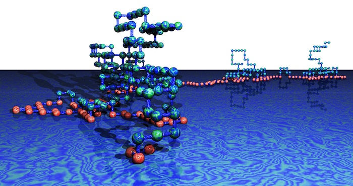

Research Portfolio
Research Programme
Lattice Polymers, also known as lattice random walks, are a rich set of models describing the universal geometric and topological behaviour of long chain polymers which are ubiquitous in the world around us, from paints and plastics to the DNA in our cells. These models provide key insights into the behaviour of such polymers, but they also have deep connections to a variety of other models in mathematical physics, combinatorics and probability theory. Their study allows us to uncover both new physical phenomena and new mathematical structures.
My major programs of work are
Integrable lattice polymer models at the interface of algebra, analysis and combinatorics
Lattice paths, which model the geometry of polymers, play an important role in modern combinatorics and mathematical physics, and the resolution of these models has drawn on such diverse fields as algebra, probability theory and complex analysis. The projects I conduct aim to use a range of sophisticated techniques to expand the diversity and utility of solvable polymer models, which interface with the rich topic of integrable lattice models in statistical mechanics.
The fundamental aim of these projects is to push forward the frontier of exactly solvable lattice path polymer models by:
- Generalising the types of lattice path models to new, more diverse, polymer systems.
- Applying sophisticated techniques to develop new methods for solving these models, and analysing their universal critical behaviour and phase diagrams.
- Developing principles for understanding the scope of the methods by studying the relationship between the symmetries of the models and their solvability.
Expected outcomes include powerful new mathematical and computational tools in combinatorics and statistical physics..
Next generation simulation of polymer systems in complex environments
Elucidating the behaviour of long chain polymers using computer simulations, in various environments and experiencing physical and chemical interactions, has yielded a growing bank of results and insights over decades. The suite of projects here aims to apply next generation computational techniques to tackle the new frontier of polymer simulations, and in particular polymers with complex interactions and those with complicated topologies like stars, knots and links which have hitherto been inaccessible. Expected outcomes include new simulation methods designed to make use of modern computational clusters, and numerical estimates for the fundamental quantities driving polymer behaviour. T he aims are to further develop Monte Carlo algorithms for long chain polymers which run in highly parallel systems, making use of modern computational clusters with many CPU cores.
These will lead to a greater understanding of complex polymer systems, which are widespread in chemistry, biology, and manufacturing.
Research Recognition
My most significant contributions have been in the area of lattice models in statistical mechanics. I am an authority on the scaling associated with the `critical phenomena and phase transitions’ of dilute polymeric systems as modelled by lattice walks. This is a coherent body of work published in leading journals in mathematical physics with a cross-disciplinary vision to chemistry and biology. As of March 2023 I had published 134 refereed journal articles and 9 refereed conference articles in established and top journals/conferences, and one book chapter. Articles found by a search in the ISI Web of Science index show an average of over 40 citations per year since he began being cited, with a total of 1500 citations. Google Scholar lists over 2100 citations and a h-index of 25. In the past 5 years, Google Scholar records over 80 citations per year indicating that his output has continued to be more impactful over time.
Several of my papers have been selected to feature on the front covers of the journals, including the paper J. Phys. A: Math. Theor. 50 484001 (2017). This paper has also been selected for the Journal of Physics A Highlights of 2017 collection. My paper J. Phys. A.: Math. Theor. 42 125001(26pp) (2009) was highlighted by the journal as the most highly rated by the referees. I have also had three papers (including Phys. Rev. E 031912:(9pp) (2009)) chosen to be included in the Virtual Journal of Biological Research after appearing in print in Physical Review.
© 2025 Aleksander Owczarek
Based on updates made by Nicholas Beaton
Template design by Andreas Viklund